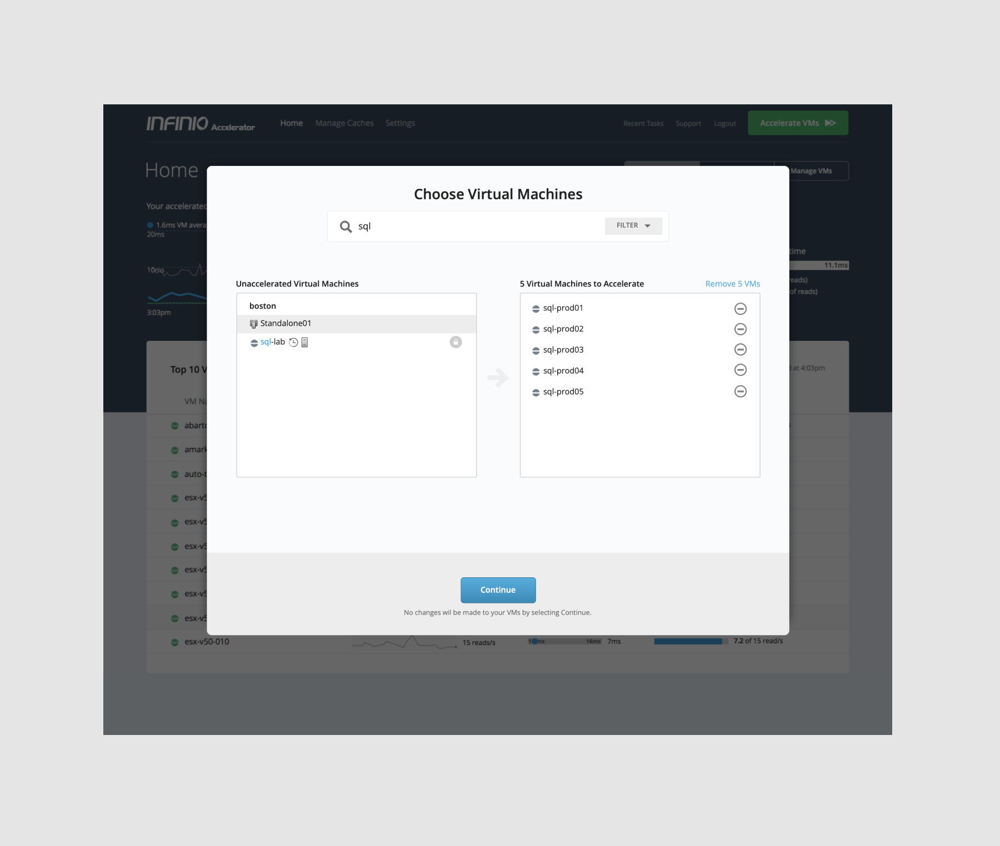
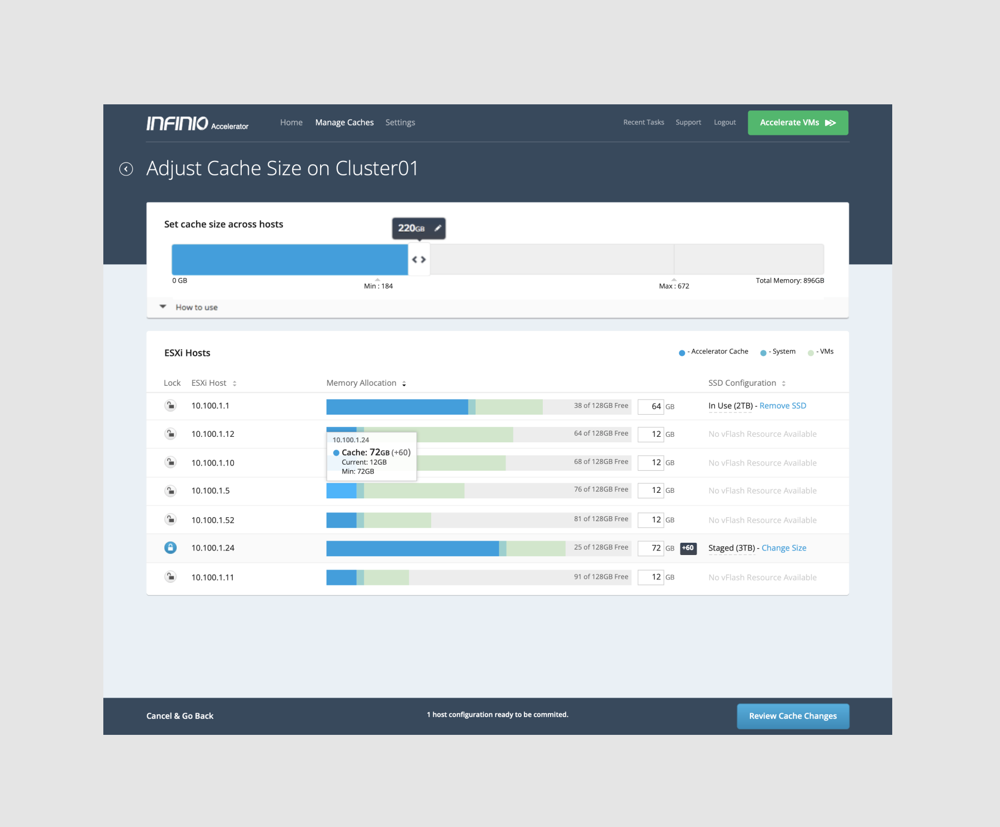
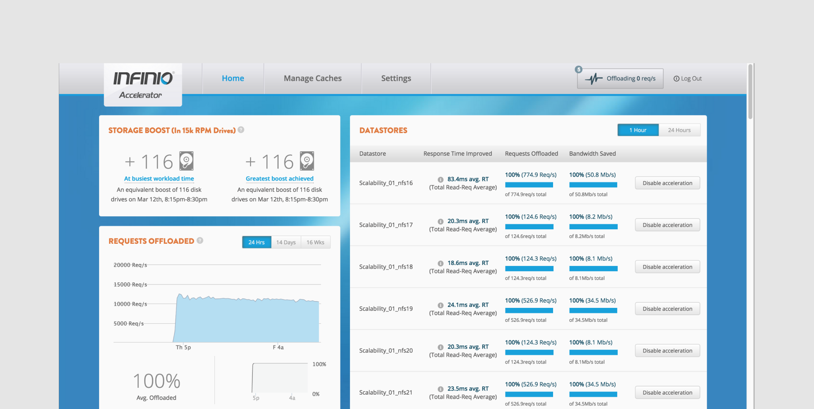
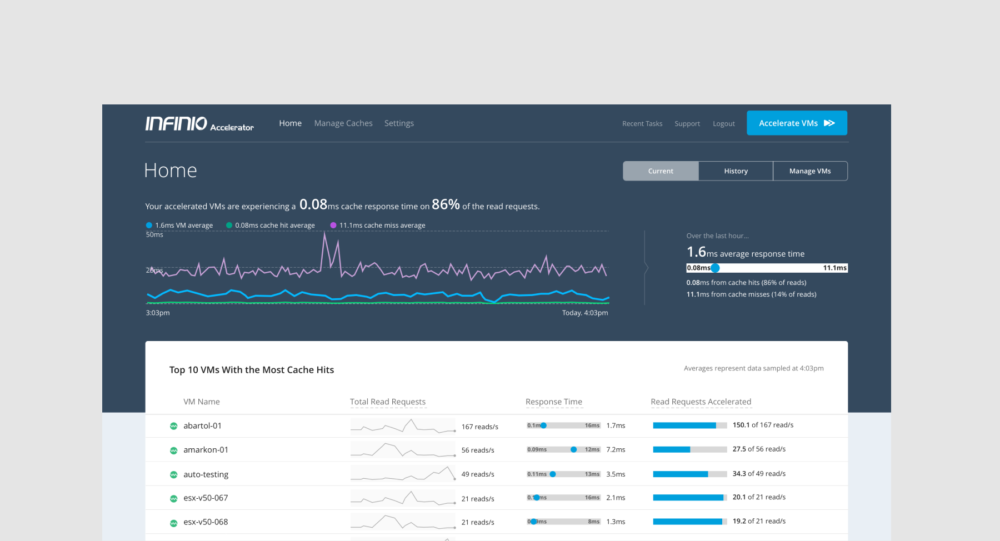
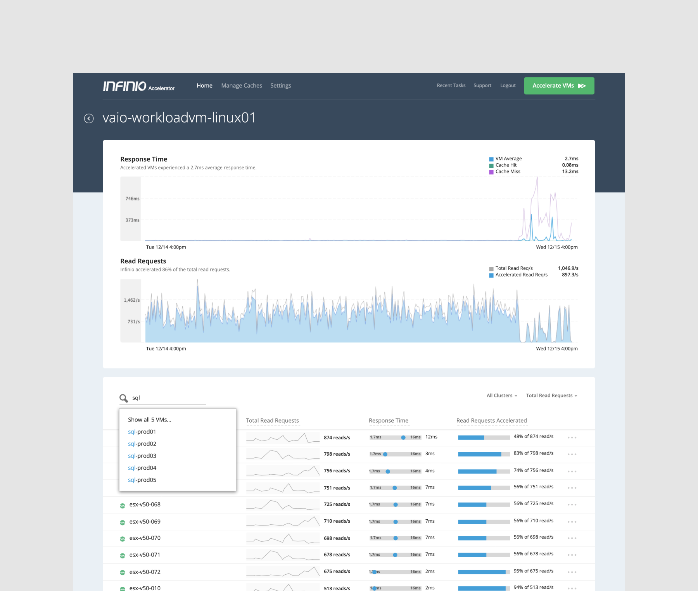

← Back to Home
The purpose of the Infinio Accelerator product was to improve the performance of servers. IT Administrators would face difficulties maintaining adequate application performance as resource demands scaled beyond the capabilities of the hardware infrastructure. Infinio was a software-only solution that would solve this problem through a novel distributed server-side cache that was built to be integrated into a VMware environment.
The goal of the UI for the Infinio Accelerator was two fold:
From early user research with IT administrators, we knew that breaking into the market with new, novel software would come with hesitation. Admins, rightfully so, tend to be risk averse. A key aspect of their job is to keep the lights on. There would be some natural skepticism to rely on new technology like Infinio.
The Infinio go-to-market strategy centered around making the software easy to try. Part of an admin's process of vetting new technology is to run it in a lab. If Infinio could create a low friction means of spinning up the tech and putting it to the test, we increased our chances of making an impression.
So, we created a installation experience to make the task as simple as possible for admins. Steps, copy, and settings were carefully chosen to reduce as much friction as possible. Scroll right to view samples:
Infinio installation wizard
Infinio setup modal
Enterprise infrastructure technology typically needs to be tuned and configured to meet the needs of each organization. Infinio approached this problem in a similar way to the installation experience; make it as simple as possible.
We created a configuration experience that allowed the admin to tune the system while gauging the impact to their infrastructure. In technical language, they could increase the cache size while monitoring how much memory was being consumed at the server lever. Cache size was the benefit, but server resources (i.e. memory) was the cost.
Infinio cache configuration
The final key piece to the Infinio user experience was the analytics. Admins would use this information to understand the impact Infinio was having on their infrastructure. Sometimes this would be used to troubleshoot, other times this would be used to gauge the effectiveness of the product. This aspect of the UI was iterated upon the most based on how the market was responding to the product. Assumptions about how admins perceive value were challenged, which opened opportunities for improvement!
Earlier iteration of the Infinio dashboard
Infinio dashboard
Infinio analytics drill down